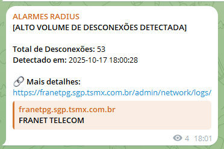
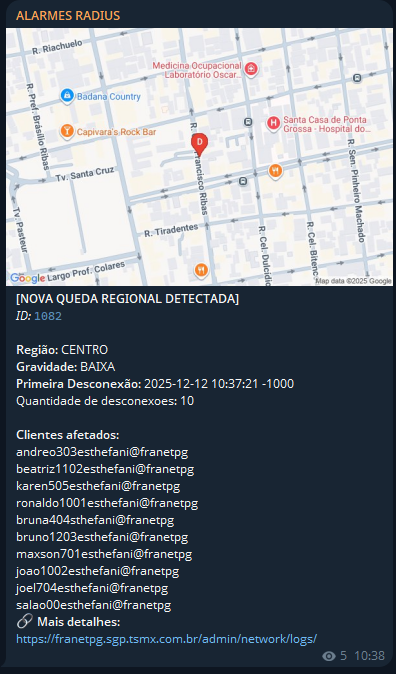
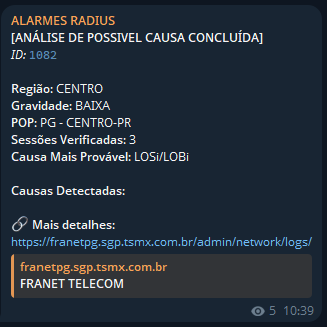
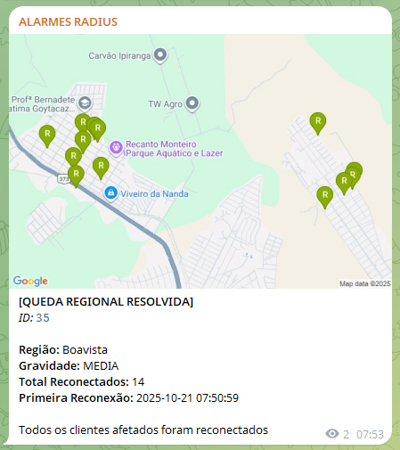
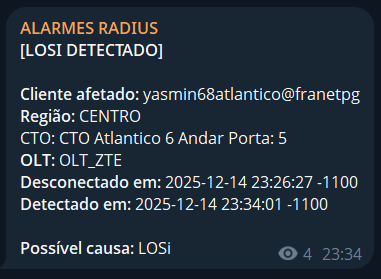
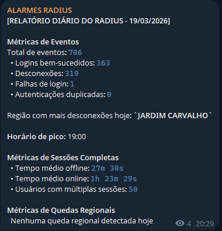

Sistema de monitoramento de eventos de autenticação com detecção de anomalias em tempo próximo ao real.
A integração com a fonte de dados é realizada via API REST, com coleta periódica de eventos de autenticação e processamento assíncrono em pipeline interno.
O sistema é implementado como um microsserviço escrito em Go, projetado para ser acoplado a qualquer VM com acesso à rede. O binário compilado é distribuído via imagem Docker e provisionado através de um pipeline de CI/CD, eliminando dependências de ambiente e garantindo reprodutibilidade entre deploys. A ausência de runtime externo e o baixo consumo de recursos tornam o serviço adequado para execução em infraestruturas de menor porte.





Relatórios diários são gerados automaticamente a partir dos eventos processados no período correspondente.

As notificações geradas pelo sistema são entregues nos canais de comunicação configurados para a operação.